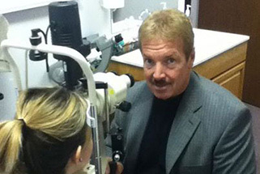
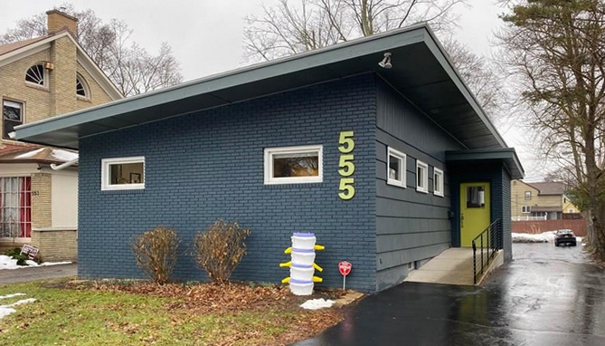
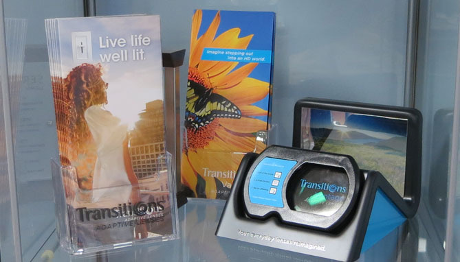

President · Doctor of Optometry
Dr. Cary A. Kazdan
President of Dr. Cary A. Kazdan & Associates, PLLC, the practice Rochester families have trusted since 1990.
RochesterSpencerport, NYSince 1990
Dr. Kazdan & Associates is a full-spectrum eye care practice for families of any size or age: thorough eye exams, contact lenses, a full optical shop, and the medical eye care to keep your eyes healthy for years to come.

Welcome
We are a compassionate team of highly trained people whose goal is to help our patients see the world at its very best.
We serve the varied needs of a diverse population. The patients who most appreciate us are young families, people with challenging visual needs and maturing eyes. Expect friendly, comprehensive eye care, the latest technology for even the most complex visual requirements, and a well-trained team. And we take extra steps to better our community through outreach programs that help the less fortunate.
“We know your vision is important to you – and it’s important to us.”
Eye care services
Comprehensive exams and vision screening for children and adults, including glaucoma, retinal and diabetic eye checks.
Learn moreSoft, rigid and custom designs, even for difficult prescriptions, allergies and dry eyes.
Learn moreAn ultra-wide, high-resolution image of about 82% of your retina in a single picture.
Learn moreZEISS i.Profilerplus® and i.Terminal® 2 technology for a super-precise prescription.
Learn moreDiagnosis and management of eye disease, with surgery co-management close to home.
Learn moreSame-day appointments whenever possible for eye infections and injuries, plus dry eye relief.
Learn more

Optical shop
Our highly qualified NYS licensed opticians are skilled in measuring, aligning and repairing eyeglasses for extended comfort and the best possible vision. We help you choose fashionable designer frames and advanced lenses, with a keen eye on function.
You have 30 days to experience your new glasses. If you don’t love them, we’ll change them, fix them or refund your optical investment. All Premier and Value frames include a 1-year warranty against breakage, and anti-reflective and scratch-resistant lens treatments include a 1-year warranty.
Our doctors

President · Doctor of Optometry
President of Dr. Cary A. Kazdan & Associates, PLLC, the practice Rochester families have trusted since 1990.
Doctor of Optometry
Sees patients at Dr. Kazdan & Associates as a Doctor of Optometry.
Our story
1990
More than three decades of family eye care in the Rochester area.
2021
On January 4th, 2021 we opened our new Rochester office, just south of the intersection of North Winton Road and Atlantic Avenue, with free parking behind the building.
Today
See us on North Winton Road in Rochester or at Spencerport Family Eye Care, 24 West Avenue in Spencerport.
Offices & hours
Dr. Cary A. Kazdan & Associates, PLLC
555 North Winton Road| Monday | 9:00 am – 7:30 pm |
| Tuesday | 9:00 am – 5:30 pm |
| Wednesday | 9:00 am – 5:30 pm |
| Thursday | 9:00 am – 5:30 pm |
| Friday | 9:00 am – 4:00 pm |
| Saturday | Closed |
| Sunday | Closed |
Closed daily for lunch 12:30 – 1:30 pm.
Directions on Google MapsSpencerport Family Eye Care
24 West Avenue| Monday | 9:30 am – 5:30 pm |
| Tuesday | 9:30 am – 5:30 pm |
| Wednesday | Closed |
| Thursday | 9:30 am – 8:00 pm |
| Friday | 9:30 am – 5:30 pm |
| Saturday | Closed |
| Sunday | Closed |
Closed daily for lunch 12:30 – 1:30 pm.
Directions on Google MapsTell us what works for you and we’ll get back to you with a date and time. Appointment times are subject to availability, and we will do our best to accommodate your request.